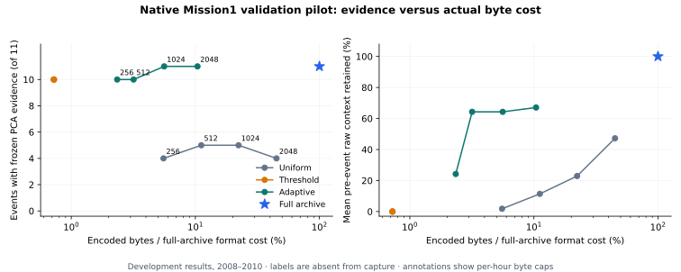

The problem: there isn’t room for everything
Spacecraft use sensors to keep track of what is happening onboard. Their measurements might describe things such as temperature, voltage, or how a component is behaving. Sending those measurements to another location is called telemetry.
Those readings take up space. When the amount of data that can be stored or sent is limited, some measurements have to be left out. That creates a difficult question: which ones will matter later?
An anomaly is a reading or pattern that looks unusual. It might be evidence of a problem, but “unusual” does not automatically mean something has failed. An investigation needs enough information to work out what happened.
Imagine a temperature reading suddenly jumps. You might want to see whether it had been rising beforehand, whether other readings changed around the same time, and whether it returned to normal afterward. Keeping only the highest temperature would lose much of that story. This is an illustrative example, rather than a description of a specific event in my experiments.
My project asks: when you can’t keep everything, can you preserve the measurements that make a later investigation possible? I’m exploring that question by replaying archived spacecraft measurements in software. The recorder is a research prototype; it has not been deployed onboard a spacecraft.
How the recorder chooses what to keep
A simple approach is to keep one reading at regular intervals. That gives a reasonably spread-out picture, but a brief event can happen between the readings you save.
Another approach is to save readings only when something looks unusual. That can use very little space, but it relies on recognizing the interesting part at the right moment. It can also miss what happened before the change.
The recorder I’m testing combines three ideas:
Keep a short rolling history
The recorder temporarily holds a few recent measurements. As new readings arrive, older ones are replaced. If a change triggers recording, some of that recent history can be saved too. The technical name is a pre-trigger buffer.
Capture around an unusual change
A trigger looks for a sufficiently large change in the incoming measurements. When one appears, the recorder tries to save the triggering reading, the available lead-up, and a short period afterward, while staying inside its budget.
Reserve room for ordinary measurements
Some capacity is set aside for readings chosen without relying on the trigger. This background sampling helps preserve parts of the record that the trigger might overlook.
The recorder sees readings in time order. It does not know in advance which moments will later be labeled as important. In research terms, it is causal: each decision uses information already available, rather than looking into the future.
The temporary history fits that rule. A reading from a few moments ago is already available when the trigger fires. A reading from tomorrow is not.
A closer look at the recording budget
The main comparison below allows 1,024 bytes per active hour. A byte is a unit of digital storage. The cap includes the saved values and the information needed to interpret them, such as timestamps and record headers.
In the experimental format, a raw record holds one timestamp and six measurement values and takes 36 bytes. Each hourly packet also has a 32-byte header. A packet containing only raw records can therefore fit at most 27 of those records under this cap.
The recorder cannot borrow unused space from a future hour. This is a budget for the project’s encoded data format; it does not include all the overhead of a real spacecraft communication link, such as encryption or retransmissions.
In the Mission1 study, the configuration uses eight prior samples, four post-trigger samples, and a 20% reservation for background capture, rounded to whole records.
How I tested whether the saved data was useful
I used archived spacecraft measurements with annotations identifying known events. These annotations are like an answer key: they help evaluate the saved data, but the recorder never gets to see them while making its choices.
The first study uses a dataset called Mission1. It replays about 3.25 million observations from 2008–2010. Earlier measurements are used to establish a reference for what ordinary behavior looks like.
- Replay the readingsFeed the original measurements to each recording method in time order.
- Apply the budgetLet each method select what to keep under the same hourly cap.
- Read back the saved filesCheck what actually survived, including its timestamps and values.
- Look for event evidenceRun a fixed statistical check on the saved measurements.
That last check is important. Saving a reading near an event does not necessarily mean it still shows anything unusual. I want to know whether the saved values retain evidence that a separate analysis can recognize.
One check uses principal component analysis, or PCA. For this project, you can think of it as a statistical way to look for combinations of readings that differ from the patterns learned from earlier data. I use an existing technique rather than claiming to have invented a new anomaly detector.
The check is calibrated on the earlier data and then kept fixed across the recording methods. That way, the comparison changes what gets saved, rather than changing the analysis to favor each method.
I also check that saved timestamps and values match the originals. Filling a gap by repeating a previous value may make a graph look continuous, but that repeated value is not an observation that was actually preserved.
What I found in the first study
There were 11 eligible validation events in the Mission1 comparison. An event counts in the table when at least one saved original measurement from that event still crosses the fixed PCA check’s threshold for unusual behavior.
| Recording method | Total saved data | Events with retained evidence |
|---|---|---|
| Regular-interval sampling | 25.04 MiB | 5 of 11 |
| Trigger-only recording | 0.81 MiB | 10 of 11 |
| Combined recorder | 6.30 MiB | 11 of 11 |
MiB, or mebibytes, measures the total size of the encoded data. One MiB is 1,048,576 bytes. “Combined recorder” refers to the adaptive recorder described above.
In this comparison, the combined recorder retained evidence for all 11 events while saving about a quarter as much data as regular-interval sampling.
All methods had the same maximum hourly allowance, but they did not spend the same amount. A trigger-only method can save very little when it rarely triggers. These results compare what the methods chose to save under a shared cap; they are not an equal-size comparison.
The result is encouraging for this particular study. It is also a small set of events. Preserving evidence for 11 known events does not tell us how well the method will work on unfamiliar faults or a different spacecraft.
The statistical check also flags some ordinary measurements. This event count does not establish a real-world false-alarm rate, or show that the software can explain the physical cause of a fault.
Other comparisons and the original results figure
A regularly spaced sample can happen to line up well or badly with a short event. To investigate that sensitivity, I also ran random sampling comparisons using ten different random seeds. A seed makes a particular random run repeatable.
At the same hourly cap, reservoir sampling retained evidence for an average of 5.1 of the 11 events, using 25.15 MiB on average. Randomized-phase sampling averaged 5.4 events and 24.96 MiB. The decimal event counts are averages across runs; each individual run still has a whole-number result.
Those repetitions explore different sampling choices on the same events. They do not tell us the uncertainty for a new population of faults.

Why the lead-up matters
Finding one unusual reading and understanding what happened around it are different goals.
To see what each part of the recorder contributed, I ran experiments with individual parts removed. This is called an ablation study: change one component, then check what happens.
When I removed the pre-trigger history, the saved data still retained PCA evidence for all 11 events. If that were the only score I looked at, the history would seem unnecessary.
But the amount of available lead-up preserved fell from 64.3% to 1.8%. That measure looks at the original observations available in the five minutes before an event, averaged across the events.
So the recorder could still preserve a sign that something unusual occurred while losing almost everything that came before it. That is why I measure context separately. An eventual investigator may need the lead-up to make sense of the event, although this study has not established how much that improves a real diagnosis.
Removing background sampling reduced the event-evidence count to 10 of 11 while using fewer bytes. Removing post-trigger capture made little difference to these headline measures. Its diagnostic benefit still needs to be demonstrated.
What happened when I tried a second mission
A method can look good on data you have already worked with and perform differently somewhere else. I therefore set up a follow-up using another dataset, called Mission2.
Before evaluating it, I recorded the selected sensor channels, time periods, settings, and main comparison. I carried the retention settings over from Mission1 rather than adjusting them after seeing the new results.
There was an important limitation: the selected Mission2 data contained no eligible anomaly events under the study’s rules. It had annotations for rare events, but those did not qualify as faults for this evaluation.
That means I could not answer the main question of whether the method preserved fault evidence on a second mission. There was no set of qualifying faults to measure against. I kept that outcome in the record rather than choosing another group after seeing it.
The follow-up did reveal something narrower. Some analyses need two consecutive measurements to examine how a signal changes. A background method that deliberately kept pairs provided 45,935 usable consecutive inputs, while the single-reading background method provided none, at nearly the same encoded cost.
That tells me about the availability of inputs for that analysis. It does not show that a fault was recovered or diagnosed. It also illustrates why there may be no single best way to save data: the useful measurements depend partly on the question someone will ask afterward.
The follow-up figure and its limits

The follow-up completed 148 recording configurations and 36 temporal assessments. The paired method retained 45,935 of 3,675,508 full-source usable transitions, or 1.25%. The paired and single-reading streams differed by 36 encoded bytes.
The study plan is preserved in the repository’s Git history. It was not a third-party preregistration.
What I built
The project is a Python research pipeline. I use NumPy for numerical calculations and pandas for working with the data.
The implementation includes:
- Recording policies that decide which original observations to retain under the budget.
- An encoder and decoder that write selected observations into packet files and read them back, so the experiment measures actual saved data.
- Replay and evaluation tools that run the comparisons, check retained values against the source, and measure event evidence and context.
- Reproducible reports with settings, per-event results, and file hashes. A hash acts as a fingerprint so someone can check that they are using the same input or output file.
- Tests and a technical report documenting the implementation, experiments, and limitations.
Keeping this record matters because a favorable table is only useful if someone can trace how it was produced. The repository includes reproduction instructions and small reports; the large source data and generated packet streams are handled separately.
What I still need to find out
The current results suggest that choosing measurements around changes, while reserving ordinary background data, is worth investigating further. They leave several practical questions open:
- Does it work on new faults? A useful next study needs independently selected data with qualifying anomaly events.
- How does it compare with stronger alternatives? Regular and random sampling are useful references, but they are not the whole set of existing recording methods.
- Does the saved context help an engineer explain a fault? Retained statistical evidence and successful physical diagnosis are separate things to evaluate.
- Would it work under real operating constraints? Processing time, memory use, communication delays, lost packets, and additional link overhead all need engineering assessment.
For now, this is a study of what information survives a recording decision. The part I find interesting is that a small event count can hide a much larger loss of context. Looking at both changes how I judge whether a recorder is useful.
If you’d like to go further
The technical report contains the full methods and qualifications. The repository includes source code, experimental settings, results, and instructions for repeating the work.
- Read the technical report
- See the Mission1 study and exact measurements
- See the component-removal experiments
- Read the Mission2 follow-up
- Browse the source code and reproduction guide
This walkthrough describes the development studies documented in the project repository. Examples used to explain the ideas are identified separately from measured results.